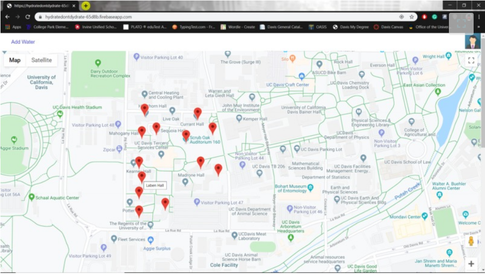

DropLit: A HackDavis Project
DropLit is a HackDavis project that sought to provide ease of access to water and in an effort to also reduce plastic water bottle consumption across UC Davis. On the website, a pinpoint can be placed anywhere a water fountain is present. The website utilizes the Google Maps API to track the location of the user and to make pinpoints. The concept is similar to Waze, except for water fountains. Since this was a Hack-A-Thon project, additional features such as user verification, databasing, and other metrics were not implmented fully. Regardless, this experience provided me enormous exposure to databases, API integration, and frontend technologies.